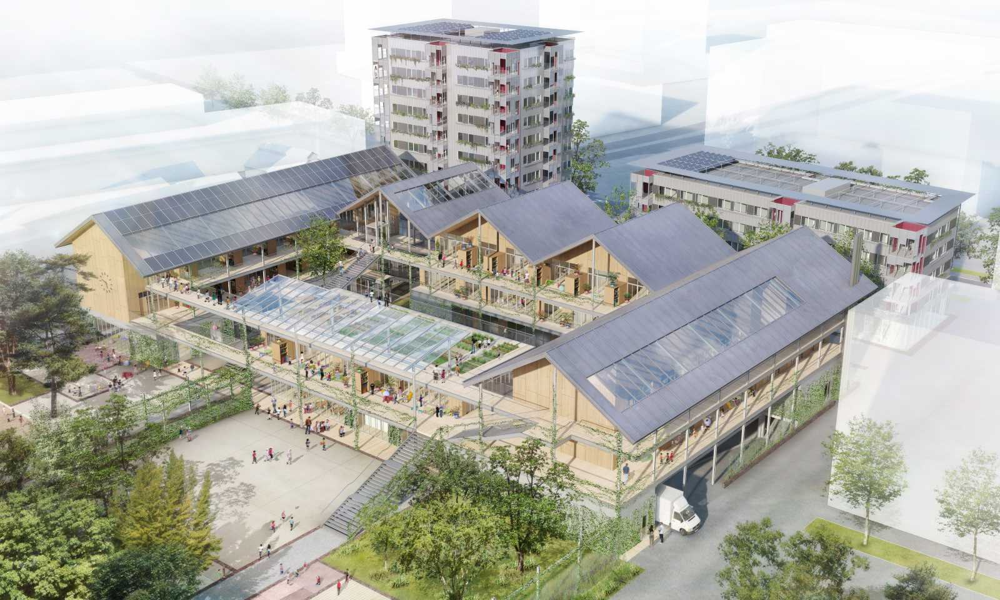

Survolez l'image et agrandissez/réduisez la vue à l'aide de la molette.
Budget: 5 400 000 € HT logements, 13 180 000 € HT école et parking
Surface: SHON 6250 m², 7200 m² école + 5100 aménagements extérieurs : cours, terrasses...
Date début: 2012
Date fin: -
Maîtrise d'ouvrage: Ville de Rennes, Archipel Habitat
Co-traitant(s): bureau des paysages
Description:
Au cœur du quartier de la Courrouze, à Rennes, le projet regroupe un pôle éducatif
et deux immeubles de 40 et 24 logements.
Nous avons imaginé l’école comme un parcours disposant les éléments du programme dans des pavillons implantés le long de galeries, de passages et de places.
Tout se passe comme si ce chemin pédagogique, l’idée de transition, de passage d’une section dans l’autre, d’une classe dans l’autre, constituait le dessin même du pôle éducatif. Sur 3 plateaux, depuis la crèche jusqu’aux grandes classes de l’école élémentaire, chaque lieu de vie ou de pédagogie trouve son propre espace extérieur: une cour, une terrasse de plain-pied, un prolongement. Surmontant le dernier plateau, des toits, généreux et débordants, orientés face au sud, abritent l’ensemble.
Face au pôle éducatif, les deux volumes simples des immeubles de logements, largement vitrés au rez-de-chaussée, sont posés sur l’espace public. Les ombres, les lumières, les colorations et les reflets sur les façades en aluminium légèrement réfléchissant leur donnent un aspect naturel et changeant. Chaque logement dispose d’un séjour, d’une cuisine et d’un grand balcon, qui, réunis, forment ensemble une “pièce à vivre”, correspondant à la partie “jour” du logement. Ces pièces à vivre s’ouvrent sur un angle ou disposent d’une double et parfois d’une triple orientation ; elles développent ainsi, entre le dedans et le dehors, une surface utilisable d’environ 40 m2.
{kind=link}
{kind=link}
{kind=link}